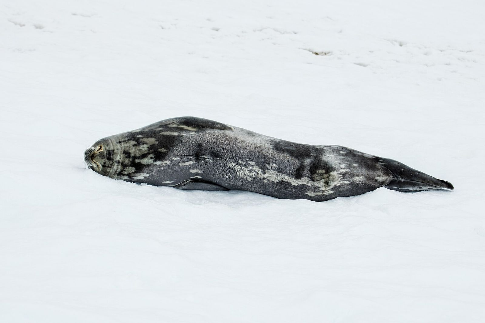
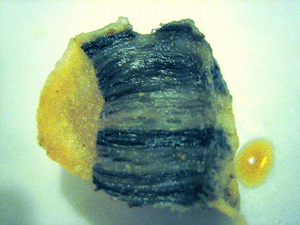
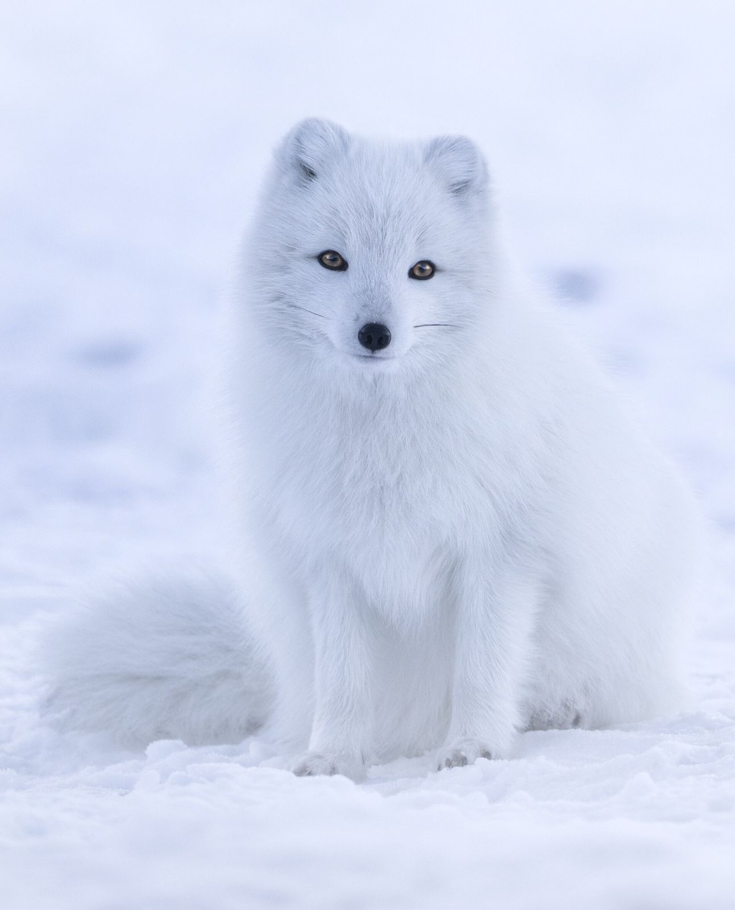
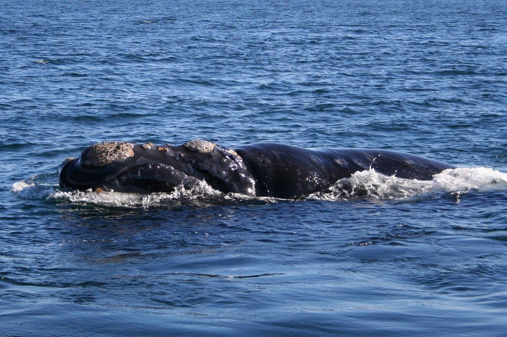

Year 9 Science · Lesson 6 · Practical
Keeping warm
How does blubber work?
Weddell seal, Antarctica. Godot13. CC BY-SA 4.0
%E2%80%93Weddell_seal_(Leptonychotes_weddellii)_01.jpg){kind=link}
Starter
Why doesn't a seal freeze?
Seawater around Antarctica is about −1.8 °C. A Weddell seal's body is about 37 °C, just like yours.
Water pulls heat out of a warm body about 25 times faster than air at the same temperature. Five minutes in that water would put you in danger.
Think, pair, share: what stops the seal losing all its heat?
Key idea
Blubber is an insulator
Blubber is a thick layer of fat under the skin of whales, seals and penguins.
An insulator slows down the transfer of heat. Blubber keeps the heat made by the body inside the body.
It also stores energy for times when food is scarce, and helps the animal float.


Lab manual p14
Aim and hypothesis
Aim: to investigate how a layer of fat (blubber) helps animals keep warm in cold water.
Write your hypothesis before you start:
If I put one finger covered in lard and one finger without lard into iced water, then the finger ______ will feel colder, because ______.
Making it fair
What are we changing, measuring and keeping the same?
Lab manual p14
Method
- Fill a 500 mL beaker about ¾ full with ice and water.
- Put a small glove finger over each index finger.
- Scoop lard with one covered finger, then push it into a large glove finger.
- Push the other finger into a large glove finger without lard. Your partner can help.
- Put both fingers in the iced water for about one minute.
- Record which finger feels colder.
Equipment
- 2 small and 2 large glove fingers
- Lard
- 500 mL beaker
- Ice and water
- Paper towels
Safety
Before you start
- Take your fingers out straight away if they hurt or go numb.
- Wipe up any spills at once. Lard is slippery.
- No eating the lard.
Lab manual p15
Results and questions
Fill in the results table: how did each finger feel after one minute?
- Which finger felt colder? Was your hypothesis correct?
- Explain how blubber helps animals survive in cold environments.
- Is blubber a structural, behavioural or physiological adaptation? Explain your choice.
- Name two other adaptations that animals use to keep warm.
Use the word insulator in Q2. Say what it slows down, and where the heat stays.
Q4 ideas
Other ways to keep warm
Thinking like a scientist
How could we improve this experiment?
"Feels colder" is a judgement. Two people might feel it differently.
Better: put a thermometer or temperature probe inside each glove, and record the temperature every 15 seconds. That gives numbers we can graph and compare.
Practise
Arctic fox: name the type of each adaptation
| Adaptation | Type |
|---|---|
| Curls up and wraps its bushy tail over its face | Behavioural |
| Thick, dense winter fur | Structural |
| Small, rounded ears and short legs | Structural |
| Controls blood flow to its paws so they lose little heat | Physiological |
| Digs a den in the snow to shelter | Behavioural |
Always write the word adaptation in your answer: "a behavioural adaptation".

.jpg){kind=link}

Exit question · Tohorā, southern right whale
Is blubber structural, behavioural or physiological?
Explain your choice in one sentence.
Michaël Catanzariti. Public domain

Away today?
Missed this lesson? Catch up here
- Copy the definitions of blubber and insulator.
- Lab manual p14 to p15: write a hypothesis, then answer Q2 to Q4 using these slides.
- Try it at home with an adult: two zip-lock bags, one with a layer of butter or shortening between them, in a bowl of iced water.
- Complete the Arctic fox table on slide 11.
- Exit question: is blubber structural, behavioural or physiological?